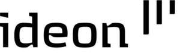

Trade Mark Journal No.2026/007 13 February 2026
UK00004332190 29 January 2026 (9,42)

- Class 9
- Subsurface detectors, underground detectors, cosmic particle detectors, cosmic ray detectors, elementary particle detectors, muon detectors and geophysics detectors all for detecting mineral and metal deposits, air voids, liquids, cracks, fissures, and caves; cosmic particle imaging systems, cosmic ray imaging systems, elementary particle imaging systems, muon imaging systems, geotomography particle imaging systems, subsurface mapping systems, subsurface imaging systems, subsurface modelling systems, subsurface density profiling systems, subsurface inversion modelling systems, all comprising measuring instruments for measuring density of, detecting instruments for detecting, monitoring instruments for monitoring subsurface anomalies, namely, metal and mineral deposits, voids, tunnels, reservoirs, caves, cracks, and fissures, temperature and location indicators, power and ethernet controllers, muon and temperature sensors, counting instruments for counting muons, alignment instruments in the nature of accelerometers, calibrating instruments for calibrating muon flux, and recorded software for operating the system and processing muon data; geophysics instruments, namely, instruments for retrieving and viewing of geographic information and associated metadata; downloadable and recorded computer software program in the field of subsurface detection of subsurface anomalies, namely, metal and mineral deposits, voids, tunnels, reservoirs, caves, cracks, and fissures.
- Class 42
- Data acquisition services for detecting and measuring density of metals, minerals, liquids, anomalies, voids, and fractures in the field of subsurface tomography; geophysics analysis, namely, analysis of geophysics data for detecting measuring density of subsurface mineral and metal deposits, air voids, liquids, cracks, fissures, and caves; cosmic ray tomographic, cosmic particle tomographic, elementary particle tomotgraphic, muon tomographic and cosmic-ray muon tomographic detection, imaging and modelling; subsurface, radiographic, cosmic ray, cosmic particle, elementary particle and muon imaging for surveying and exploration; subsurface, underground, cosmic ray intensity, cosmic particle intensity, elementary particle intensity, muon intensity, and subsurface particle intensity mapping; computer modelling, namely subsurface and subsurface inversion modelling; geological exploration and surveying services in the nature of subsurface density profiling services for the identification of metals, minerals, liquids, anomalies, voids, and fractures; software as a service (SaaS) featuring software for analysis and modelling in the fields of subsurface tomography, underground tomography, subsurface mapping, subsurface imaging, subsurface density modelling and subsurface density profiling; geological exploration and surveying services in the nature of profiling subsurface anomalies, namely, imaging, analyzing, and providing density profiles of subsurface anomalies such as mineral and metal deposits, air voids, liquids, cracks, fissures, and caves; platform as a service (PaaS) featuring software, data science platform as a service featuring software and artificial intelligence engines and data science platform services for subsurface detection of subsurface anomalies, namely, metal and mineral deposits, voids, tunnels, reservoirs, caves, cracks, and fissures.
Ideon Technologies Inc.
Representative: Forresters IP LLP